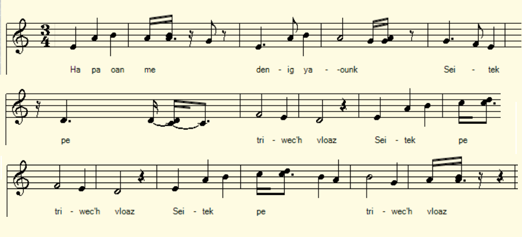
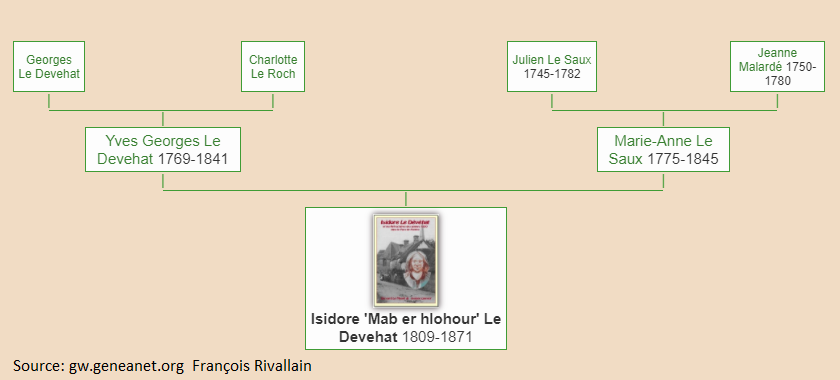

|
A propos de la mélodie: Les aventures d'Isidore Le Dévéhat ont inspiré de nombreuses gwerzioù qui se chantent sur plusieurs mélodiés notées, entre autres, par Loeiz Herrieu (Bubry, avant 1913) et l'abbé François Cadic (Bieuzy avant 1921). C'est une de celles-ci, intitulée "Le fils du sonneur de Melrand", qui est présentée ici. A propos du texte La Villemarqué est sans doute le premier à avoir collecté ce chant, page 108 de son troisième carnet d'enquête. Il l'a sans doute fait après 1863, puisque le dernier chant de ce carnet portant une date est «Ar Werchez», à la page 79, daté doctobre 1863. Mais il n'est pas le dernier. Le site consacré à la classification Malrieu distingue plusieurs chants qui tous ont trait de façon plus ou moins directe au "Mab er hloher Melran", au "Fils du sonneur de cloches de Melrand": - M-00070 "Marv al letanant", "La mort du lieutenant": Cadic, La Paroisse bretonne de Paris, mars 1921. - M-00071 "En Devehat hag ar jandarmed", "Le Dévéhat et les gendarmes", 10 versions: Cadic, La Paroisse, octobre et décembre 1921 et d'autres, plus anciennes: Dihunamb (1905 et 1914), Le Diberder (avant 1915), Joseph Loth (avant 1886)... - M-0083 "Mab ar chlocher a Velran hag an tennaj", "Le fils du sonneur de cloches de Melrand et le tirage au sort", 7 versions: Loeiz Herrieu avant 1913, Cadic, La Paroisse, juin-juillet 1921, Le Diberder, 1910, publié par Gilliouard, Larboulette avant 1905, dans "Chants traditionnels vannetais". - On peut ajouter à cette liste un autre chant à propos d'un garçon aux cheveux blonds et qui doit servir dans les armées de Napoléon (M-00710, "Paotr e vlev melen", "Le garçon aux cheveux blonds"). La présente gwerz notée par La Villemarqué- que l'on peut ranger parmi les chants de type M-00071 - est une des rares à ne pas être en dialecte de Vannes, l'idiome parlé à Melrand. |
About the melody: The adventures of Isidore Le Dévéhat have inspired many ballads that are sung to several tunes recorded, among many others, by Loeiz Herrieu (Bubry, before 1913) and Abbé François Cadic (Bieuzy before 1921). It is one of these melodies, entitled "The son of the bell ringer of Melrand", which is used as sound background for the present page. About the text La Villemarqué is undoubtedly the first collector to have recorded this song, on page 108 of his third collection book. He very likely did so after 1863, since the last song entered with a date in this book is "Ar Werchez", on page 79, dated October 1863. But he is by no means the last. The site devoted to the Malrieu classification has several songs which all relate more or less directly to "Mab er hloher Melran", i.e. the "Son of the Melrand bell ringer": - M-00070 "Marv al letanant", "The death of the lieutenant": Abbé Cadic, La Paroisse bretonne de Paris, March 1921. - M-00071 "En Devehat hag ar jandarmed", "Le Dévéhat and the gendarmes": 10 versions: Cadic, "La Paroisse...", October and December 1921 and others later: Review "Dihunamb" (1905 and 1914), Le Diberder (before 1915) , Joseph Loth (before 1886) ... - M-0083 "Mab ar c'hloc'her a Velran hag an tennaj", "The son of the bell ringer of Melrand and the lot-drawing": 7 versions: Loeiz Herrieu, before 1913; Cadic, La Paroisse, June- July 1921; Le Diberder, 1910 published by Gilliouard; Larboulette before 1905, in "Traditional songs in the Vannes dialect". - We can add to this list another song about a "boy with blond hair" who was to serve in Napoleon's armies (M-00710, "Paotr e vlev melen", "The boy with blond hair"). br> The present version collected by La Villemarqué which can be placed among the songs of the M-00071 type is one of the few pieces that are not in the Vannes dialect, the idiom spoken at Melrand. |
|
BREZHONEK p. 108 Izidor Divead fils du sacristain de Meslan, Condamné à 15 ans Grâcié au bout de (5 ans) (près chez [?]) 1. Ha pa oan-me denig yaouank Seitek pe triwech vloaz (teir w.) [1] 2. Pa garen-me ur verch yaouank Ma galon a rae joa. (div w.) 3. Pe laosken-me un taol c'hwitell Pe [o]tramant ur poz kan, (teir w.) 4. Holl ar merched eus ar charter A veze holl kontant. (div w.) 5. Rak ne gaven kompagnonaj 'met hini ar peizant . 6. Hag a-vremañ m 'edon-me , 'met pa'n e'it bout ur brigand. --- 7. Pa oan-me e ker a Bondi 'tre nav a jandarmed, (teir w.) [2] 8. Krenañ a rae ma chalon baour O sojal er galer. (div w.) 9. An eil a lare degile: - Ar-choazh en-deus arc'hant!, 10. Roin ket 'nezhañ dar chas Bondi Da brenein koumanant. 11. Med o lakay war ar mezioù D'a brofitein ane[zh]e. (teir w.) 12. Reiñ ket 'ne[z]hañ dar chas Bondi Da vout goapet gante. 13. - Kalon, kalon ma advokat, Mar gouzoch skrivoù ha lenn, 14. M'am-eus-me choazh ma liberté Choazh ur wech da bourmen... - [3] KLT gant Christian Souchon |
TRADUCTION FRANCAISE p. 108 Izidor Divead fils du sacristain de Melrand, Condamné à 15 ans Grâcié au bout de 5 ans (par [?]) 1. Je n'étais alors qu'un jeune homme - Dix-sept ou dix-huit ans -(ter) 2. Quand j'étais aimé d'une belle J'avais le coeur content. (bis.) 3. Quand je jouais un air de flute Ou chantais un couplet,(ter) 4. Dans le quartier toutes les filles Aussitôt accouraient. (bis) 5. Je n'avais d'autre compagnie Que d'humbles paysans. 6. Me voici désormais en passe De n'être qu'un brigand. --- 7. Quand je fus entre neuf gendarmes Conduit à Pontivy (ter)[2] 8. J'avais, en pensant aux galères Le coeur de peur transi.(bis) 9. J'entends les badauds qui chuchotent: - A qui donc va son bien?, 10. Aux chiens de Pontivy qui rêvent D'acheter du terrain? 11. Je ferai tout pour qu'ils ne puissent Jamais en profiter.(ter) 12. Chiens de Pontivy, inutile De vouloir me moquer. 13. - Et vous, mon avocat, courage! L'écrit est votre fort. 14. En liberté je me promène Pour le moment encor... - [3] Traduction Ch. Souchon (c) 2020 |
ENGLISH TRANSLATION p. 108 Izidor - Divead - son of the sexton of Melrand church, Sentenced to 15 years Pardoned after 5 years (by [?]) 1. With seventeen or eighteen years My grown-up's life did start: (ter) 2. When a lass was in love with me I was happy at heart.(bis) 3. Whenever I tooted the flute Or I sang a ditty (ter) 4. All lasses from the neighbourhood Instantly rushed near me. (bis) 5. I had no other company Than uncouth country folks. 6. So, that I became a brigand Was just beyond all hopes! --- 7. When I was between nine gendarmes Driven to Pontivy (ter) [2] 8. My poor heart was frozen with fear Thinking of the galley.(bis) 9. I heared onlookers whispering: - Who gets his property? - 10. - Never the land speculators Who thrive in Pontivy! 11. I'll see to it that they may not Have the least part of it.(ter) 12. Pontivy dogs' evil intents Nearly pass human wit. 13. Now cheer up, my lawyer, cheer up! You know to write and read. 14. As for me, I was freed to go Around still, as I pleased... - [3] |
|
[1] Dans la présente gwerz, le héros de l'histoire, raconte qu'à 17 ou 18 ans, ses talents de musicien et de chanteur étaient très appréciés des dames, mais que ses mauvaises fréquentations ont fait de lui un brigand. Maintenant il attend d'être jugé à Pontivy. Il risque fort d'être condamné aux galères et il semble compter sur son avocat, grâce à qui il est toujours en liberté, pour protéger ses biens, que l'on peut croire considérables. Ce texte est précédé de 2 remarques faites par La Villemarqué : - "Izidor Divead, fils du sacristain de Meslan 1838". - "Condamné à 15 ans, gracié au bout de 5 ans." Ces indications permettent de retrouver des données précises concernant ce personnage sur le site gw.geneanet.org qui présente un arbre généalogique dressé par M. François Rivallain (cf. illustration ci-après). Il s'agit d'Isidore Le Dévéhat , scieur de long, né le 12 mai 1809 à Melrand dans le Morbihan et décédé le 6 mai 1871 à Langourla dans les Côtes-du-Nord. C'était le fils d'Eouan Jorj (Yves-Georges) Le Dévéhat (1769-1841) qui exerçait diverses professions, tisserand, garde-forestier, sacristain et sonneur de cloches. C'est cette dernière spécialité qui a été retenue par la postérité pour servir de sobriquet vannetais à son fils: "Mab er Hlohour", le "Fils du sonneur". On remarque que la présente gwerz a été notée du vivant de l'intéressé. [2] Plus encore que la généalogie, ce sont les gwerzioù et les commentaires à leur sujet que l'on doit, en particulier, à l'abbé François Cadic, qui nous livrent un portrait vivant de cet Isidore et nous racontent sa tumultueuse carrière à laquelle la période des réfractaires au service militaire sous la monarchie de juillet sert de toile de fond. L'abbé Cadic précise: "Il était dusage de lire le nom des conscrits au prône de la grandmesse et Isidore rendit le recteur coupable de son départ à larmée... Au lieu de se soumettre, Le Dévéhat préféra mener la vie de réfractaire." "Ayant appris son voyage au pardon de Notre Dame de la Joie à Pontivy, Le Dévéhat et deux amis résolurent de lattaquer... Après sêtre arrêté boire une tasse de lait au village de Kersulan en Bieuzy, le lieutenant fut rejoint à côté de la croix de Kenentuec. Il fut porté par ses amis et déposé sur une large pierre à côté de la maison Pérès. Menaces ni promesses ne permirent de trouver la moindre piste. Pour ses obsèques à Pontivy, labbé Guillam, vicaire de lépoque, ne signale que deux témoins." "Ne ya nemet tri deiz er sizhun araok ar jañdarmed: D'ar merc'her, d'ar gwener ivez, d'ar sadorn an drivet A-hend-all holl war-lerc'h! Laoskit int da vonet!" "Il ne se sauve que trois jours par semaine devant les gendarmes: mercredi, vendredi et samedi. Les autres jours, tous autant que vous êtes, vous pouvez toujours couris après lui!" Sans hésiter, il commande bien haut à laubergiste trente chopines de cidre pour ses amis qui arrivent... soi-disant! A cette annonce, les gendarmes effrayés préfèrent senfuir. - Dans une autre version, il va à Guerveur-Guern doù il séchappe sous le nez de la garnison de Pontivy. Mais, ayant été touché dun coup de fusil, il va se réfugier à Quelven. - Puis à Pontivy, il soffre le luxe daller trouver Lavias, le capitaine des gendarmes, sous prétexte de lui dévoiler le refuge du fils du sonneur. Après sêtre fait régaler dun bon repas, il se sauve en se moquant des gendarmes. - Mais du côté de Saint-Brieuc, un jeune chasseur la trahi et lattrape en lenfermant dans une auberge. «Maintenant, il vous faudra aller aux galères». Ce dernier passage se rapporte aux faits suivants: "Soucieux de se faire un peu oublier, Le Dévéhat sexpatria à Langourla dans les Côtes-du-Nord, en tant que jardinier et garde-chasse auprès de la famille de Lanascol. Mais Lebrun, un autre domestique, ancien réfractaire lui aussi, le dénonça pour assouvir la jalousie qui lanimait. Le Dévéhat se fit prendre par surprise dans une auberge et il fut conduit à Pontivy, puis à Vannes. L'abbé Cadic nous apprend en outre que beaucoup des gwerzioù en dialecte de Vannes qui racontent les hauts-faits du Fils du sonneur furent composées par Jacques Coinec, le barde aveugle de Séniel, un légitimiste endiablé tout comme Isidore et les deux faisaient une paire d'amis. [3] La présente gwerz a trait à l'arrestation à Pontivy , puis au procès à Vannes du réfractaire en 1842. Pendant trois jours et trois nuits, 70 témoins défilèrent et la découverte de la montre du lieutenant Ventini dans sa poche causa sa perte. Le Dévéhat eut beau nier avec énergie les crimes qu'on lui imputait, déclarant qu'il en voulait uniquement au gouvernement de Louis-Philippe, il fut condamné à 101 ans de bagne. Il resta au bagne de Brest de 1842 à 1856 doù il sortit, suite à un acte de clémence de Napoléon III. Cependant, il resta interdit de séjour dans le Morbihan. Il mourut en 1865." "N'avez-vous rien à dire, Le Dévéhat?" lui demanda le Président. "J'ai à remercier, répondit-il, la gendarmerie du Morbihan qui m'a traité avec humanité, mais non celle des Côtes-du-Nord, qui m'a traité comme une brute." La gwerz notée par La Villemarqué, semble reproduire ces propos sous une forme erronée. [4] L'abbé Cadic signale un autre fait intéressant: "On était en 1842. [Le Dévéhat] allait remplacer au bagne de Brest son ami Mandart qui avait obtenu sa grâce." Le nom de cet autre réfractaire apparaît raturé en tête de la page 108, ce qui suggère que La Villemarqué a hésité a propos de l'attribution du chant qu'il venait de noter. Comme ce fut le cas pour Le Dévéhat, on voyait en Mandart un champion de la cause légitimiste (qui avait toute la sympathie de La Villemarqué). Par ailleurs "l'avocat qui avait assuré la pénible mission de le défendre en face d'un jury mal disposé et d'un public surexcité était maître Jourdan, une célébrité du barreau vannetais:.. (qui] vint le réconforter à son entrée en prison..." Peut-être notre gwerz confond-elle les deux personnages. La remarque de La Villemarqué: "1838, Condamné à 15 ans, Grâcié au bout de 5 ans" semble convenir d'avantage à l'affaire Mandart qu'au cas Le Dévéhat qui resta 14 ans au bagne. Le dernier des carnets de Keransquer s'achève donc, curieusement, par un chant en l'honneur d'un héros populaire dont le nom signifie en breton soit "tardif" (diwezhat), soit "dernier" (diwezhañ)! Cependant, c'est La complainte des Chouans, publiée par l'abbé Cadic qui termine le plus logiquement l'examen des chants que la muse bretonne a consacrés à la Chouannerie. |
[1] In the present gwerz, the hero of the story, states that, when he was 17 or 18 years old, his talents as a musician and singer were very much appreciated by the ladies, but that the bad company he kept made him a robber. Now he is waiting to be tried in Pontivy. He risks being condemned to the galleys and he apparently relies on his lawyer, thanks to whom he is still free, to protect his property, which seems to be considerable. This text is preceded by 2 remarks made by La Villemarqué: - "Izidor Divead, son of the sacristan of Meslan 1838". - "Sentenced to 15 years, pardoned after 5 years by...." These indications made it possible to find precise data concerning this character on the site gw.geneanet.org which presents a genealogical tree drawn up by Mr. François Rivallain (see illustration below). The song refers to 'Isidore Le Dévéhat, a pit-sawyer, born May 12, 1809 at Melrand in Morbihan and died May 6 1871 at Langourla in the département Côtes-du-Nord. He was the son of a named Eouan Jorj (Yves-Georges) Le Dévéhat (1769-1841) who had several callings. He was a weaver, a forest ranger, a sexton and bell ringer. It is this last job which was retained by posterity to serve as a Vannes dialect nickname for his son: "Mab er Hlohour", the "Son of the bell ringer". Note that the gwerz at hand was recorded while the hero in the story was still alive. [2] Even more than genealogy, a body of Breton ballads and comments on them, in particular by Rev. François Cadic give us a living portrait of this Isidore and tell us about his tumultuous career to which the period of the draft evaders under the July Monarchy serves as a backdrop. As stated by Abbé Cadic: "It was customary to read the names of the conscripts from the pulpit at high mass and Isidore imputed to the vicar his leaving for the army ... Yet, instead of complying with law, Le Dévéhat preferred to become a draft dodger." "Having heard that he would attend the Notre Dame de la Joie "pardon" celebration in Pontivy, Le Dévéhat and two confederates resolved to attack him ... After a break at Kersulan village to drink a cup of milk, next to Bieuzy, the lieutenant was attacked near the Kenentuec wayside cross. His friends carried him away and laid him on a large stone slab next to a named Pérès' house. Threats or promises did not allow any clue to be found. His funeral in Pontivy church, as stated by Abbé Guillam, who was vicar back then, was attended by only two people." "Ne ya nemet tri deiz er sizhun araok ar jañdarmed: D'ar merc'her, ar gwener ivez, ar sadorn an drivet A-hend-all holl war-lerc'h! Laoskit int da vonet! " "Only three days a week did he beware of gendarmes: on Wednesdays, Fridays and Saturdays. The rest of the week, run after him as they would, they would never catch him!" Without hesitation, he loudly asked the innkeeper to bring thirty pints of cider for his friends who were on their way ... supposedly! On hearing that, the frightened gendarmes took to their heels for safety. - Then in Pontivy, he offered himself the luxury of addressing Lavias, the captain of the gendarmes, under the pretext of disclosing the hiding place of the bell ringer's son. After being treated to a good meal, he ran away, mocking the constables. - But near Saint-Brieuc, a young hunter betrayed him and eventually managed to lock him up in an inn. "Now you are in for a trip to the galleys". This last episode hints at the following facts: "Anxious that people would forget him a little, Le Dévéhat repaired to Langourla in the Côtes-du-Nord, where he was appointed as a gardener and gamekeeper by the Lanascol family. But Lebrun, another manservant, also a former draft-dodger , denounced him out of jealousy. Le Devéhat was captured by surprise in an inn and he was taken to Pontivy, then to Vannes. Abbé Cadic also tells us that many of the gwerzioù in the Vannes dialect which recount the deeds of the "Son of the Bell Ringer" were composed by a named Jacques Coinec, also known as "the blind bard of Séniel". He was as staunch a Legitimist as was Isidore and the two were a pair of friends. [3] The "gwerz" at hand is about the arrest in Pontivy, followed the trial of the draft evader in Vannes in 1842. For three days and three nights, there was a procession of 70 witnesses and the discovery of Lieutenant Ventini's watch in Isidore's bag caused his loss. Deny energically as he might, the crimes were imputed to Le Dévéhat, though he kept declaring that he was only against the government of Louis-Philippe. He was condemned to serve 101 years in jail. He remained in Brest jail from 1842 to 1856 from which he left, following an act of clemency by Emperor Napoleon III. However, he remained under internal exclusion order applying to the département Morbihan. He died in 1865. " "Have you anything to say, Le Dévéhat?" the Presiding Judge asked him. "I have to thank, he replied, the Morbihan constables who treated me humanely, unlike their colleagues of Côtes-du-Nord, who treated me as if I were a beast." The "gwerz" recorded by La Villemarqué seems to echo these words in an erroneous form. [4] Rev. Cadic points out another interesting fact: "It was in the year 1842. [Le Dévéhat] was going to replace in the Brest prison his friend Mandart who had obtained his pardon." The name of this other draft evader appears, crossed out, at the head of page 108, which suggests that La Villemarqué was unsettled about his ascribing to Le Dévéhat the song he had just recorded. As was the case with Le Dévéhat, people saw in this Mandart a defender of the Legitimist Cause (to which La Villemarqué was certainly favourable). Moreover "the lawyer who had the difficult mission of defending him in front of an ill-disposed jury and an overexcited audience was Maître Jourdan, a famous Vannes barrister-at-law: .. (who ] came to comfort him when he entered prison ... " Perhaps the present ballad mixes up the two characters. La Villemarqué's remark: "1838, Sentenced to 15 years, pardoned after 5 years" apparently suits the Mandart affair better than the Le Dévéhat case, since the latter stayed in prison for 14 years. It is a bit astonishing that the last of the three Keransquer notebooks should end with a song in honour of a popular hero whose name in Breton means either "late" (diwezhat) or "last" (diwezhañ)! However, it is The Chouan Lament, published by Father Cadic that most logically ends the survey of the songs devoted by the Breton muse to the "Chouannerie". |
